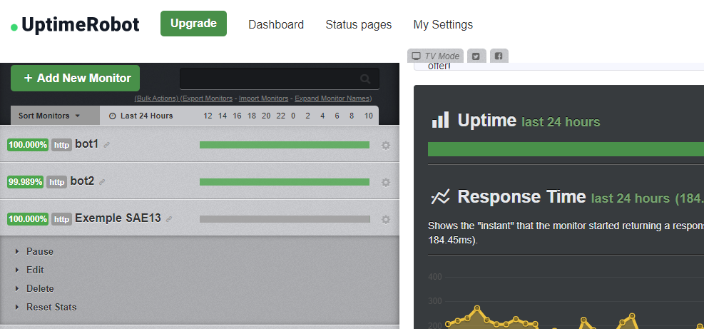
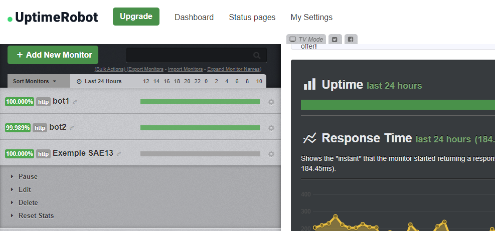

Création d'un Bot :
Pour créer un Bot discord c'est ultra simple : Il suffit d'aller dans le mode avancés dans les setting du profil puis d'activer le mode developpeur.
Puis ensuite d'aller dans le l'application tier : Discord Portal puis il faut aller dans "application" et créer une application.
Après une fois le Bot prêts il y a plusieur applications disponible pour codder le bot: VisualSudioCode, mais encore replit.com etc.....
Il y a plusieur type de language qui peuvent servir à coder un bot discord : -Python (avec la bibliothèque discord.py) -javascript (avec discord.js) -C# (permet de faire des jeux sur discord directement avec l'interface de Discord) -java,C++, etc....
En dernier on va devoir héberger notre Bot pour qu'il soit actif 24h/24, pour cela on peut utiliser plusique site web
Puis ensuite d'aller dans le l'application tier : Discord Portal puis il faut aller dans "application" et créer une application.
Après une fois le Bot prêts il y a plusieur applications disponible pour codder le bot: VisualSudioCode, mais encore replit.com etc.....
Il y a plusieur type de language qui peuvent servir à coder un bot discord : -Python (avec la bibliothèque discord.py) -javascript (avec discord.js) -C# (permet de faire des jeux sur discord directement avec l'interface de Discord) -java,C++, etc....
En dernier on va devoir héberger notre Bot pour qu'il soit actif 24h/24, pour cela on peut utiliser plusique site web
Mon Bot Discord
Pour commencer on créer une application sur le site Discord Developeur Portal, on configure le TOKEN du bot puis on le rentre à la fin du code pour que le code reconnaise le bot et qu'il puisse l'activer depuis le site
Ensuite il faut rentrer l'URL qui m'a été donnée dans l'application sur le site Discord Developper Portal pour pouvoir inviter le bot dans le serveur que l'on veux.
Ensuite là on peut voir mon code avec un message qui est en embed (embed = type de format de message)
En dernier on peux voir le résultat avec une commande "?ping" qui renvoie un message en embed qui explique comment marche les ping et quels sont les 2 type de ping
Voici si vous voulez essayer le bot le lien qui permet de l'ajouter à un serveur Discord, pour cela il suffit juste de créer un serveur temporaire (il faut en être l'admin) puis il faut copier coller ce lien !
Dans l'image ci-dessous on peut voir le site sur lequel j'héberge gratuitement


 

Bot Discord fait par la Communauté
Il y a beaucoup de Bot très utiles aussi bien professionnellement parlant que divertissant. Voici les 25 bot les plus installés. Dans les plus connus/installé il y a :
MEE6 est LE Bot par excellence pour la modération du serveur. Il scanne les éventuelles violations des règlements de Discord : langage inapproprié, spam, spoilers, liens externes… Il est possible de le personnaliser pour qu’il empêche d’avertir, de bannir, ou d’expulser automatiquement les personnes qui ne respectent pas ces règles. Son système encourage les utilisateurs à discuter pour monter en « niveau » et ainsi de débloquer d’autres fonctionnalités.
ProBot: Il te permettra de modérer l'interface d’une manière professionnelle, cela se fera simplement, mais efficacement. Que ce soit pour voir les statistiques des utilisateurs les plus actifs, ou pour gérer les réponses automatiques, ce bot te sera d’une grande utilité. Grâce à lui, des options comme : créer des pages d’accueil, mettre une musique de fond, sanctionner ceux qui iront à l’encontre des règles établies… seront à portée de main. En résumé, ce robot est l’outil de modération par excellence pour assurer pleinement le rôle d’administrateur.
Rythm est un bot très connu, pour permettre d’écouter des musiques de YouTube, SoundCloud ou des chaînes Twitch depuis son serveur Discord. Rythm permet de lancer, mettre une chanson à la suite, passer une chanson ou même obtenir les paroles de la chanson actuelle. Si une salle vocale ne doit pas pouvoir avoir de musique de fond, il sera possible de la blacklister ainsi que de choisir les rôles des membres pouvant mettre le bot Rythm en marche.